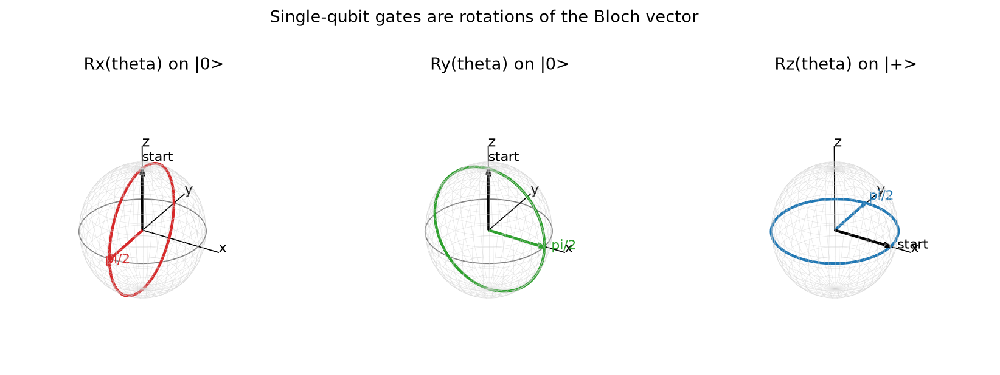
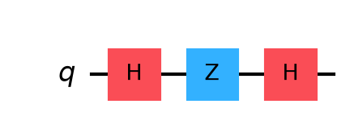
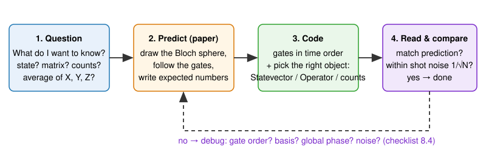

Chapter 1 — Qubits, Gates, Measurement, Bloch Sphere
A qubit is a list of two complex numbers. A gate is a 2×2 matrix that transforms that list. That is all of it — later chapters just scale it up.
How to use this page. Six interactive demos (drag the spheres to rotate the camera) sit right after the concepts they illustrate. Every symbol is explained the first time it appears; the full list is in the notation cheat sheet. Run the Python versions with
uv run python 01-qubits-and-gates/code/01_bloch_sphere.py and 02_measurement_qiskit.py.
0. Math Survival Kit (≈ 20 min)
You need only four ideas: complex numbers, vectors, matrices, probabilities. Think of them as data types.
0.1 Complex Numbers
A complex number is a pair of floats $(a, b)$ written $z = a + bi$, where $i$ is a special value with $i^2 = -1$. Python: z = 3 + 4j.
| Symbol | Read as | Meaning | Python |
|---|---|---|---|
| $z = a+bi$ | “z equals a plus b i” | real part $a$, imaginary part $b$ | complex(a, b) |
| $\bar z$ or $z^*$ | “z conjugate” | flip sign of the imaginary part: $\overline{a+bi}=a-bi$ | z.conjugate() |
| $\lvert z\rvert$ | “magnitude of z” | length of the pair: $\sqrt{a^2+b^2}$ | abs(z) |
| $\lvert z\rvert^2$ | “magnitude squared” | $a^2+b^2 = z\bar z$ — always real and ≥ 0 | abs(z)**2 |
| $e^{i\varphi}$ | “e to the i phi” | a point on the unit circle at angle $\varphi$: $\cos\varphi + i\sin\varphi$. Length always 1 — it is just a rotation by $\varphi$ | cmath.exp(1j*phi) |
Mental picture: a complex number is an arrow in a 2D plane. $\lvert z\rvert$ is its length, its angle is its phase. Multiplying by $e^{i\varphi}$ rotates the arrow without changing its length. Key values: $e^{i0}=1$, $e^{i\pi/2}=i$, $e^{i\pi}=-1$, $e^{i2\pi}=1$. Greek letters are just variable names: $\alpha$ alpha, $\beta$ beta, $\theta$ theta, $\varphi,\phi$ phi, $\lambda$ lambda, $\gamma$ gamma. Angles are in radians ($\pi$ = half turn = 180°).
Demo 1Complex-Number Playground
Click or drag in the plane to move $z$. The slider multiplies it by $e^{i\varphi}$ (a pure rotation: the length never changes).
0.2 Vectors and the “Ket” Notation
A vector is an array of numbers. Physicists draw a column and name it with a funny bracket called a ket:
$$|\psi\rangle \;=\; \begin{pmatrix}\alpha\\ \beta\end{pmatrix} \;\;\leftrightarrow\;\; \texttt{psi = np.array([alpha, beta])}$$- $|\cdot\rangle$ is read “ket”. $|\psi\rangle$ = “ket psi” = the vector named psi. The bar and angle bracket are decoration saying “this is a quantum state vector”. Inside you can put any label: $|0\rangle$, $|1\rangle$, $|+\rangle$.
- $|0\rangle = \begin{pmatrix}1\\0\end{pmatrix}$ and $|1\rangle = \begin{pmatrix}0\\1\end{pmatrix}$ are the two basis vectors (like unit vectors $\hat x,\hat y$). Any state is a mix of them: $|\psi\rangle = \alpha|0\rangle + \beta|1\rangle$. Read: “psi is alpha times ket-zero plus beta times ket-one”. $\alpha,\beta$ are called amplitudes.
- Bra $\langle\psi|$ (“bra psi”) = the same vector as a row and complex-conjugated: $\langle\psi| = (\bar\alpha,\ \bar\beta)$. numpy:
psi.conj(). - Bra-ket $\langle\phi|\psi\rangle$ = bra times ket = a single number, the inner product (generalised dot product):
np.vdot(phi, psi). If it is 0 the states are orthogonal (perfectly distinguishable). $\langle\psi|\psi\rangle = 1$ for a valid state. Example: $\langle 0|1\rangle = 1\cdot0 + 0\cdot1 = 0$; $\langle 0|0\rangle = 1$. - Ket-bra $|\phi\rangle\langle\psi|$ = column times row = a 2×2 matrix (outer product,
np.outer). E.g. $|0\rangle\langle0| = \begin{pmatrix}1&0\\0&0\end{pmatrix}$. - Normalised means total length 1: $\langle\psi|\psi\rangle = |\alpha|^2+|\beta|^2 = 1$. Why 1? Because those squares will be probabilities, and probabilities sum to 1.
0.3 Matrices and Operators
A gate is a 2×2 matrix $U$. Applying it is matrix–vector multiplication: $|\psi'\rangle = U|\psi\rangle$ = U @ psi. Applying $U$ then $V$ is $VU|\psi\rangle$ — right to left, like function composition $V(U(x))$.
| Symbol | Read as | Meaning | numpy |
|---|---|---|---|
| $U^\dagger$ | “U dagger” | conjugate transpose (flip rows/cols, conjugate every entry) | U.conj().T |
| $U^\dagger U = I$ | “U is unitary” | $U^\dagger$ undoes $U$; length is preserved. Every quantum gate is unitary ⇒ gates are reversible rotations. | np.allclose(U.conj().T@U, np.eye(2)) |
| $I$ | identity | does nothing | np.eye(2) |
| $\langle\psi\vert M\vert\psi\rangle$ | “expectation of M in psi” | row · matrix · column = one number | psi.conj() @ M @ psi |
| $\sum$ | sum | a for-loop adding terms | sum(...) |
| $\otimes$ | tensor product | combine systems (Chapter 2) | np.kron |
0.4 Probability Basics
- A probability $p\in[0,1]$ (“p is in the range 0 to 1”); all outcomes sum to 1.
- Expectation value (average) of a ±1 outcome: $\langle P\rangle = p(+1)\cdot(+1) + p(-1)\cdot(-1)$.
- Law of large numbers: with $N$ samples (“shots”) the estimated frequency has error $\approx 1/\sqrt N$. 100 shots ≈ ±10 %, 10 000 shots ≈ ±1 %.
1. The Engineer’s Mental Model
| Classical | Quantum |
|---|---|
| bit ∈ {0, 1} | qubit = np.array([α, β]) with abs(α)**2 + abs(β)**2 == 1 |
| gates (AND, OR…) mostly irreversible | gate = unitary matrix → always reversible |
| reading a bit is free and repeatable | measurement gives 0/1 randomly with probabilities from the amplitudes, and destroys the superposition |
| state is a value | state is a vector of complex amplitudes that can cancel (“interference”) |
Quantum computing in one sentence: evolve amplitudes with unitary matrices so that wrong answers' amplitudes cancel and right ones add up, then measure.
2. State of One Qubit
$$|\psi\rangle = \alpha|0\rangle + \beta|1\rangle,\qquad |\alpha|^2+|\beta|^2 = 1$$Read: "a qubit is a combination (superposition) of 0 and 1 with complex weights; the squared magnitudes of the weights add to 1".
- Measuring gives 0 with probability $|\alpha|^2$ and 1 with probability $|\beta|^2$ (the Born rule, §5).
- $|+\rangle = \tfrac{1}{\sqrt2}|0\rangle + \tfrac{1}{\sqrt2}|1\rangle$ (“ket plus”): a 50/50 coin. $\tfrac1{\sqrt2}\approx0.707$ and $0.707^2=0.5$.
- $|-\rangle = \tfrac1{\sqrt2}|0\rangle - \tfrac1{\sqrt2}|1\rangle$ is also 50/50 when measured, but a different state — the minus sign (a relative phase) matters later.
Global vs. Relative Phase (Important)
- Global phase: multiply the whole vector by $e^{i\gamma}$. Probabilities don't change ($|e^{i\gamma}\alpha|^2=|\alpha|^2$), nothing can ever detect it. Ignore it: $|\psi\rangle\sim e^{i\gamma}|\psi\rangle$ (“is physically equivalent to”).
- Relative phase: a phase between $\alpha$ and $\beta$, e.g. $\alpha|0\rangle+e^{i\varphi}\beta|1\rangle$. Invisible when measuring right now, but it changes the outcome of later gates through interference (§6). Think “hidden state that only shows up after another $H$”.
Counting parameters: 2 complex numbers = 4 reals; minus normalisation = 3; minus global phase = 2 real parameters → fits on the surface of a sphere (two angles). That sphere is next.
3. The Bloch Sphere — a Map of All Single-Qubit States

Every state can be written with two angles:
$$|\psi\rangle = \cos\tfrac{\theta}{2}\,|0\rangle + e^{i\varphi}\,\sin\tfrac{\theta}{2}\,|1\rangle$$- $\theta\in[0,\pi]$ (“theta”) = latitude measured from the north pole. $\theta=0$ → $|0\rangle$ (north), $\theta=\pi$ → $|1\rangle$ (south). Sets the 0/1 probabilities.
- $\varphi\in[0,2\pi)$ (“phi”) = longitude = the relative phase. Doesn't affect 0/1 probabilities.
- The half-angle $\theta/2$ appears because orthogonal states ($|0\rangle,|1\rangle$) are 90° apart in vector space but 180° apart on the sphere.
The arrow's position is $\vec r=(x,y,z)=(\sin\theta\cos\varphi,\ \sin\theta\sin\varphi,\ \cos\theta)$. Equivalently $x=\langle X\rangle$, $y=\langle Y\rangle$, $z=\langle Z\rangle$ — the expectation values of the Pauli matrices of §4, i.e. “the average result of measuring along that axis”.
| State | Where | Vector |
|---|---|---|
| $\lvert0\rangle$, $\lvert1\rangle$ | north / south pole (±z) | $(1,0)$, $(0,1)$ |
| $\lvert+\rangle$, $\lvert-\rangle$ | ±x | $(1,\pm1)/\sqrt2$ |
| $\lvert{+i}\rangle$, $\lvert{-i}\rangle$ | ±y | $(1,\pm i)/\sqrt2$ |
Rules of thumb: opposite points on the sphere = orthogonal states. Equator = 50/50 outcomes in the Z basis. The sphere only works for one qubit.
Demo 2State Explorer
Move θ and φ and watch amplitudes, probabilities and the arrow. Then slide γ (global phase): the amplitudes change but nothing else does.
4. Gates = Unitary Matrices = Rotations
A gate moves the state arrow elsewhere on the sphere. Because it must preserve length it can only rotate it.
4.1 Pauli Gates
$$X=\begin{pmatrix}0&1\\1&0\end{pmatrix},\qquad Y=\begin{pmatrix}0&-i\\i&0\end{pmatrix},\qquad Z=\begin{pmatrix}1&0\\0&-1\end{pmatrix}$$Reading a matrix: row 1 = $(a,b)$, row 2 = $(c,d)$; the result of $M\binom{\alpha}{\beta}$ is $\binom{a\alpha+b\beta}{c\alpha+d\beta}$.
- $X$ swaps the entries → $X|0\rangle=|1\rangle$. It's the quantum NOT. A 180° rotation about the x axis.
- $Z$ keeps $\alpha$ and flips the sign of $\beta$ → $Z|0\rangle=|0\rangle$, $Z|1\rangle=-|1\rangle$. “Phase flip”. 180° about z. Invisible on $|0\rangle$ but turns $|+\rangle$ into $|-\rangle$.
- $Y$: both at once (with an $i$). 180° about y.
4.2 Hadamard and Phase Gates
$$H=\frac{1}{\sqrt2}\begin{pmatrix}1&1\\1&-1\end{pmatrix},\quad S=\begin{pmatrix}1&0\\0&i\end{pmatrix},\quad T=\begin{pmatrix}1&0\\0&e^{i\pi/4}\end{pmatrix},\quad P(\phi)=\begin{pmatrix}1&0\\0&e^{i\phi}\end{pmatrix}$$- $H$ (Hadamard) — the “make a superposition” gate. $H|0\rangle=|+\rangle$, $H|1\rangle=|-\rangle$, and $H|+\rangle=|0\rangle$ (it undoes itself). Rotates the sphere so that z ↔ x.
- $P(\phi)$, $S$, $T$ rotate around the z axis by angle $\phi$ ($S$ = 90°, $T$ = 45°). They change relative phase only. Used for interference.
Notation: $\frac1{\sqrt2}$ in front of a matrix scales every entry; $\sqrt2$ = np.sqrt(2).
4.3 Identities
$HZH = X$ means “H, then Z, then H, is the same as X” (read the product right to left). Meaning: $H$ is a change of viewpoint (z ↔ x), so a Z-flip seen from the other viewpoint is an X-flip. You'll use this basis-change trick constantly.
4.4 Rotation Gates
$$R_P(\theta)=e^{-i\theta P/2}=\cos\tfrac\theta2\,I-i\sin\tfrac\theta2\,P\qquad (P\in\{X,Y,Z\})$$- Reads “rotate by angle $\theta$ about axis $P$”. The exponential of a matrix is defined by its power series; for Paulis (which square to $I$) it collapses to the cos/sin formula on the right.
scipy.linalg.expm(-1j*theta/2*P)gives the same. - This is the parametrised gate of variational algorithms: $\theta$ is the knob you will optimise.
- Any single-qubit gate is three rotations: $U = e^{i\gamma}R_z(\phi)R_y(\theta)R_z(\lambda)$ (Euler angles, like yaw/pitch/roll). It is Qiskit's
U(θ, φ, λ)gate.
Subtlety: $R_x(2\pi)=-I$ — a full turn on the sphere returns to the same point, but the vector is multiplied by $-1$ (a global phase, unobservable). The vector needs $4\pi$ to return exactly.
Demo 3Gate Lab — Gates Are Rotations
Click gates to apply them in sequence (right-multiplied as matrices, shown below). The orange trail is the path the arrow takes. Try H, Z, H from |0⟩: you end at |1⟩, exactly what $X$ does.

5. Measurement (the Born Rule)
Measure in the computational (Z) basis:
$$p(x)=|\langle x|\psi\rangle|^2,\quad x\in\{0,1\}$$Read: “the probability of seeing $x$ is the squared magnitude of the inner product of $|x\rangle$ with the state”. For $|\psi\rangle=\alpha|0\rangle+\beta|1\rangle$: $\langle0|\psi\rangle=\alpha$, so $p(0)=|\alpha|^2$ — exactly what we said. After seeing $x$, the state collapses to $|x\rangle$ (the superposition is gone; measuring again gives the same $x$).

Measuring in another basis (say X): apply a gate that rotates that axis onto z, then measure normally. For X: apply $H$, then measure. (Hardware only measures Z; everything else is “rotate, then measure”.)
Shots: one run gives one random bit, so you run the circuit $N$ times (a “shot” = one run) and collect counts like {'0': 512, '1': 488}. Estimated $p(0)\approx 512/1000$, error $\sim1/\sqrt N$.
Expectation value of a Pauli $P$ (eigenvalues ±1): $\langle P\rangle=\langle\psi|P|\psi\rangle=p(+1)-p(-1)$. This is what Qiskit's Estimator returns and what VQE (Ch. 8) minimises.
Demo 4Shot-Noise Lab
Prepare a state, pick a measurement basis, then fire shots. The lower chart shows the running estimate converging (log x-axis) inside the ±2/√N band.

6. Interference — Why Quantum Is Not Just “Random Bits”
Forget qubits for a minute. First a real experiment you can picture, then we map it onto gates.
6.1 A Real Experiment: Two Half-Mirrors
A half-mirror (beam splitter) reflects half of the light and lets half through. Send one single photon at it and a detector behind each side clicks 50 % of the time on one side, 50 % on the other. Fair coin.
Now build this (a Mach–Zehnder interferometer): photon → half-mirror 1 → two routes, upper and lower, of exactly equal length → they meet again at half-mirror 2 → detectors A and B.
As a programmer you’d say: two fair coin flips in a row, so A and B each get 50 %. Reality:
| Setup | “Marble” prediction (classical) | What real photons do |
|---|---|---|
| Both routes open, equal length | A 50 %, B 50 % | A 100 %, B 0 % |
| Both open + a thin glass slab in the lower route | A 50 %, B 50 % | anything from A 100 % to B 100 %, depending on the glass thickness |
| Lower route blocked | A 25 %, B 25 %, 50 % absorbed | A 25 %, B 25 %, 50 % absorbed (marble-like) |
Look at rows 1 and 3. With one route blocked, detector B does click sometimes. Open the second route and B never clicks. Adding a possibility removed an outcome. A coin flip can never do that: extra paths can only add probability. So the photon is not “secretly taking one route at random”; both routes contribute something that can cancel.
6.2 The Explanation: Every Route Carries a Clock Hand
Quantum mechanics gives each route a little arrow, like the hand of a clock (this is the complex-number arrow from Demo 1). Three rules:
- Length of the hand = how strongly that route contributes. After half-mirror 1 each route has length $\tfrac1{\sqrt2}$; after half-mirror 2 each route’s contribution to a detector is $\tfrac1{\sqrt2}\cdot\tfrac1{\sqrt2}=\tfrac12$.
- Angle of the hand = how far along its wave cycle that route is. The glass slab turns the hand of the lower route by an angle $\phi$ (depends on thickness). Equal-length routes without glass: $\phi=0$.
- To get a detector’s total, walk along the hands tip to tail. The straight-line distance from start to finish is the amplitude, and probability = distance squared.
One more physical fact: at half-mirror 2, the two hands going to detector A are added as they are, but of the two going to detector B one is flipped by 180° (a reflection off glass flips the sign — it is the $-1$ in the Hadamard matrix). Detector A’s picture, for three glass thicknesses:
| Glass $\phi$ | Detector A: hand 1 + hand 2 | $p(A)$ | Detector B: hand 1 + (flipped hand 2) | $p(B)$ |
|---|---|---|---|---|
| $0^\circ$ | $\tfrac12+\tfrac12=1$ | 1 | $\tfrac12-\tfrac12=0$ | 0 |
| $90^\circ$ | $\tfrac12+\tfrac i2$, length $0.71$ | 0.5 | $\tfrac12-\tfrac i2$, length $0.71$ | 0.5 |
| $180^\circ$ | $\tfrac12-\tfrac12=0$ | 0 | $\tfrac12+\tfrac12=1$ | 1 |
Why blocking helps B: with the lower route blocked only one hand of length $\tfrac12$ is left. Nothing to add, nothing to cancel: $p=(\tfrac12)^2=\tfrac14$ at each detector. The second route was the thing cancelling B.
Notice that A and B always share the same total: $p(A)+p(B)=1$. Whatever “probability” A gains from the hands lining up, B loses.
Probabilities vs. amplitudes. A marble-world computation adds probabilities (always ≥ 0, never cancel). Quantum adds amplitudes (arrows, they can point opposite) and only then squares the length. That one change in the order of operations is all of interference.
6.3 Try It Yourself
Demo 5 is this exact experiment. Do these four things in order:
- Leave the defaults (glass $\phi=0$, no blocker) and fire 100 photons: A gets all of them.
- Choose “lower route” as the blocker and fire again: B is now allowed to click.
- Remove the blocker, drag the glass slider to $1\pi$: now B gets everything and A gets none.
- Set $\phi=0.5\pi$: back to a fair coin. A fair coin is just one special glass thickness.
Demo 5Two Half-Mirrors (Mach–Zehnder)
Blue = upper route, orange = lower route, green slab = glass that turns the lower route’s hand by φ. The detectors glow in proportion to their true probability; the bars count real (simulated) photons.
6.4 Now the Same Thing With a Qubit
| Experiment | Qubit circuit |
|---|---|
| half-mirror | Hadamard gate $H$ |
| upper / lower route | basis states $|0\rangle$ / $|1\rangle$ |
| glass slab | phase gate $P(\phi)=\mathrm{diag}(1,e^{i\phi})$ — turns only the $|1\rangle$ hand |
| detector A / B | measure 0 / 1 |
| blocking a route | deleting that component (it never reaches the end) |
So the circuit $H\to P(\phi)\to H$ is the experiment. The arithmetic from 6.2, written with matrices:
- $H|0\rangle=\tfrac1{\sqrt2}|0\rangle+\tfrac1{\sqrt2}|1\rangle$ — two hands of length $0.71$, no angle yet.
- $P(\phi)$ turns the second hand: $\tfrac1{\sqrt2}|0\rangle+\tfrac{e^{i\phi}}{\sqrt2}|1\rangle$. Lengths unchanged, so still 50/50 if measured now. The information is hiding in the angle.
- Second $H$ sends each component to both outputs: $|0\rangle\to\tfrac1{\sqrt2}(|0\rangle+|1\rangle)$ and $|1\rangle\to\tfrac1{\sqrt2}(|0\rangle-|1\rangle)$. Collect what lands on $|0\rangle$: $\tfrac12+\tfrac{e^{i\phi}}2$; on $|1\rangle$: $\tfrac12-\tfrac{e^{i\phi}}2$.
- Squared lengths: $p(0)=\tfrac14|1+e^{i\phi}|^2=\tfrac14(2+2\cos\phi)=\cos^2\tfrac\phi2$ and $p(1)=\sin^2\tfrac\phi2$.
Demo 6Same Experiment as Arrows and a Curve
Left: the amplitude of |0⟩ is the sum of two arrows of length ½ (one per “path”); the second is rotated by φ. Right: its squared length is the probability.

6.5 In Code
Matrices and arrows are not magic; here is the whole experiment in numpy (run it, then change phi):
import numpy as np
H = np.array([[1, 1], [1, -1]]) / np.sqrt(2) # half-mirror
def glass(phi): return np.diag([1, np.exp(1j * phi)]) # delays the lower route
start = np.array([1, 0]) # photon enters
for phi in [0, np.pi / 2, np.pi]:
out = H @ glass(phi) @ H @ start # right to left = in time order
print(f"phi={phi:4.2f} P(A), P(B) =", np.round(abs(out) ** 2, 3))
mid = H @ start # after half-mirror 1
blocked = np.array([mid[0], 0]) # lower route removed
print("lower route blocked:", np.round(abs(H @ blocked) ** 2, 3))phi=0.00 P(A), P(B) = [1. 0.]
phi=1.57 P(A), P(B) = [0.5 0.5]
phi=3.14 P(A), P(B) = [0. 1.]
lower route blocked: [0.25 0.25]6.6 Why This Matters
Interference makes the relative phase from §2 measurable: sandwich a phase between two $H$ gates and it becomes a 0/1 probability. Every quantum algorithm is this recipe:
- Superpose — $H$ puts every candidate answer in play;
- Mark with phases — gates turn each answer’s hand by an amount that depends on the answer (the “computation”);
- Interfere — more $H$-like gates make wrong answers’ hands cancel and the right answer’s hands add up;
- Measure — the right answer now has a high probability.
Grover, Shor and phase estimation (Chapters 4–6) are this recipe with a cleverer middle step. Quantum computers do not “try everything at once and read the best”; they steer the hands so that only good answers survive.
7. Qiskit Cheat Sheet
from qiskit import QuantumCircuit
from qiskit.quantum_info import Statevector, Operator
from qiskit_aer import AerSimulator
qc = QuantumCircuit(1)
qc.h(0); qc.s(0); qc.rx(0.3, 0) # gates, applied in order (left→right in the circuit)
Statevector(qc) # exact amplitudes (simulation only! real HW can't give this)
Operator(qc).data # the 2x2 matrix of the whole circuit
qc.measure_all()
AerSimulator().run(qc, shots=1000).result().get_counts()A circuit diagram reads left to right in time, but the equivalent matrix product is written right to left: circuit H → Z → H = matrix $H\,Z\,H$ (same here by symmetry; not in general).

8. Exercises: From Problem to Code to Result
The hard part is not Python, it is knowing what to ask the computer and how to read the answer. This section gives you the loop, then solves the exercises so you can see it in action.
8.1 The Mental Model: a Four-Step Loop

- Question. Turn the exercise into one of four question types (table below).
- Predict on paper. Use the Bloch sphere as a map: each gate is a fixed move of the arrow. Write the numbers you expect.
- Code. Put the gates in the circuit in time order, then ask for the object that answers your question.
- Read & compare. Same as the prediction (within shot noise)? Done. If not, use the checklist in 8.4.
8.2 Which Object Answers Which Question
| You want to know… | Build | Ask for | How to read it |
|---|---|---|---|
| “Which state do I end up in?” | circuit without measure | Statevector(qc) | .data = the amplitudes $[\alpha,\beta]$. .probabilities() = $[p(0),p(1)]$. Bloch vector from expectation_value of X, Y, Z (helper in the script below). |
| “What matrix does this circuit equal?” | circuit without measure | Operator(qc) | .data = the 2×2 matrix. Compare with == (exact) or .equiv() (ignores global phase). |
| “What would real hardware show?” | circuit with measure_all() | AerSimulator().run(qc, shots=N).result().get_counts() | a dict {'0': 3723, '1': 277}: how many times each bitstring was seen out of $N$. Divide by $N$ for a probability. Order of keys is arbitrary. |
| “What is the average of X (or Y, Z)?” | rotate that axis onto Z, then measure | counts, or sv.expectation_value(Pauli('X')) | $\langle P\rangle=(n_0-n_1)/N$ — a number in $[-1,1]$. Result 0 counts as $+1$, result 1 as $-1$. |
Measuring in another basis = add gates before the measurement: for X add h; for Y add sdg then h; for Z add nothing. (Hardware can only measure Z.)
Three reading rules. (1) The qubit starts in $|0\rangle$ unless you prepare it otherwise. (2) A circuit is read left to right in time, the matrix is the product right to left. (3) Statevector/Operator are “god mode” — exact numbers only a simulator can give. Counts are what a real device gives, with noise $\approx 1/\sqrt N$.
8.3 Worked Exercises
Try each one yourself first (5 minutes, on paper), then open the solution. Every solution follows Predict → Code → Read → Check. The full runnable file is code/03_exercises_worked.py; run it with uv run python 01-qubits-and-gates/code/03_exercises_worked.py.
Exercise 1. Prove $HXH=Z$ and $HYH=-Y$, then verify with Operator.
Show worked solution
Question type: “what matrix is this?” → Operator.
Predict (by hand). $H=\tfrac1{\sqrt2}\begin{pmatrix}1&1\\1&-1\end{pmatrix}$ and multiplying by $X$ on the right swaps the two columns, so $HX=\tfrac1{\sqrt2}\begin{pmatrix}1&1\\-1&1\end{pmatrix}$. Multiply by $H$: $$HXH=\tfrac12\begin{pmatrix}1&1\\-1&1\end{pmatrix}\begin{pmatrix}1&1\\1&-1\end{pmatrix}=\tfrac12\begin{pmatrix}2&0\\0&-2\end{pmatrix}=Z\ \checkmark$$ Same recipe for $Y$ gives $-Y$. Intuition: $H$ swaps the x and z axes, so flipping around x seen from the other side is flipping around z.
Code.
from qiskit import QuantumCircuit
from qiskit.quantum_info import Operator
hxh = QuantumCircuit(1); hxh.h(0); hxh.x(0); hxh.h(0) # gates in time order
hyh = QuantumCircuit(1); hyh.h(0); hyh.y(0); hyh.h(0)
print(Operator(hxh).data.round(3)) # READ the matrix
print(Operator(hxh) == Operator.from_label("Z")) # CHECK exact equality
print(Operator(hyh) == -Operator.from_label("Y"))
print(Operator(hyh).equiv(Operator.from_label("Y"))) # ignores global phaseOutput and how to read it.
[[ 1.+0.j 0.+0.j]
[ 0.+0.j -1.+0.j]] ← this is diag(1, -1) = Z (".+0.j" just means "no imaginary part")
True ← HXH == Z
True ← HYH == -Y
True ← HYH equals Y once the global minus sign is ignoredCheck. Matches the hand computation. The last line shows why $-Y$ and $Y$ are “the same gate” physically (global phase, §2) even though the matrices differ.
Exercise 2. Predict the Bloch vector of $\sqrt X$ applied to $|0\rangle$ (qc.sx(0)), then check.
Show worked solution
Question type: “which state?” → Statevector and its Bloch vector.
Predict. $\sqrt X$ is “half of $X$”: $X$ rotates 180° about the x axis, so $\sqrt X$ rotates 90° about x (it is $R_x(\pi/2)$ up to global phase). Start at the north pole $+z$, turn 90° around x: the arrow ends at $-y$, the state $|{-i}\rangle$. Expected Bloch vector $(0,-1,0)$.
Code.
import numpy as np
from qiskit import QuantumCircuit
from qiskit.quantum_info import Statevector, Pauli
def bloch(sv): # (<X>, <Y>, <Z>) of a 1-qubit state
return np.array([sv.expectation_value(Pauli(p)).real for p in "XYZ"]).round(3)
qc = QuantumCircuit(1); qc.sx(0)
sv = Statevector(qc) # starts in |0> automatically
print(sv.data.round(3))
print(bloch(sv))[0.5+0.5j 0.5-0.5j] ← amplitudes α = (1+i)/2, β = (1−i)/2 (|α|² = |β|² = 0.5)
[ 0. -1. 0.] ← Bloch vector = −y. Matches the prediction.Check. Probabilities are 50/50 (on the equator) and the phase between α and β points the arrow to $-y$. Measuring in Z would not reveal this; only a Y-basis measurement would.
Exercise 3. Starting at $|0\rangle$ and using only $H$ and $S$, find the shortest sequence reaching $|{-i}\rangle$.
Show worked solution
Question type: “which gates produce this state?” — a search problem. Use the Bloch sphere as a map where each gate is a known move:
| Gate | Move of the arrow $(x,y,z)$ |
|---|---|
| $H$ | swaps x and z, flips y: $(x,y,z)\to(z,-y,x)$ |
| $S$ | spins 90° about z: $+x\to+y\to-x\to-y\to+x$ (z stays) |
Predict. Goal $-y$. $|0\rangle=+z\ \xrightarrow{H}\ +x\ \xrightarrow{S}\ +y\ \xrightarrow{H}\ -y$ ✓. So H, S, H (3 gates). Could 2 gates do it? $S$ does nothing to $+z$, and the only other first move is $H\to+x$; from there $H$ returns to $+z$ and $S$ gives $+y$. After two gates you can only be at $+z$, $+x$ or $+y$, never $-y$. So 3 is the minimum.
Code — let the computer confirm by trying every sequence of H and S, shortest first:
import itertools, numpy as np
from qiskit import QuantumCircuit
from qiskit.quantum_info import Statevector
target = Statevector([1/np.sqrt(2), -1j/np.sqrt(2)]) # |−i> = (|0> − i|1>)/√2
for length in range(1, 6):
for seq in itertools.product("HS", repeat=length):
c = QuantumCircuit(1)
for g in seq:
getattr(c, g.lower())(0) # c.h(0) or c.s(0)
if Statevector(c).equiv(target): # equiv ignores global phase
print(" -> ".join(seq), f"({length} gates)")
raise SystemExitH -> S -> H (3 gates) ← the prediction, proven minimal by exhaustive searchCheck. The paper reasoning (map of moves) and the brute-force search agree. Whenever a problem says “find gates that…”, predict with the sphere, then confirm with a tiny search loop.
Exercise 4. Measure in the X basis a qubit prepared as $R_y(\pi/3)|0\rangle$; compare the frequencies to $\langle X\rangle=\sin(\pi/3)$.
Show worked solution
Question type: “what would hardware show?” → counts, plus “average of X” → turn it into a counts statement.
Predict. $R_y(\theta)$ tilts the arrow from $+z$ toward $+x$ by $\theta$: Bloch vector $(\sin\theta,0,\cos\theta)=(0.866,0,0.5)$, so $\langle X\rangle=0.866$. Measuring X = apply $H$, then measure Z. The probability of result 0 is $p(0)=\tfrac{1+\langle X\rangle}{2}=0.933$ (why: $\langle X\rangle=p(0)-p(1)$ and $p(0)+p(1)=1$). Expect about 3732 zeros out of 4000 shots.
Code.
import numpy as np
from qiskit import QuantumCircuit
from qiskit_aer import AerSimulator
qc = QuantumCircuit(1)
qc.ry(np.pi / 3, 0) # prepare the state (angles are in radians!)
qc.h(0) # measure X = rotate X onto Z ...
qc.measure_all() # ... then an ordinary Z measurement
shots = 4000
counts = AerSimulator(seed_simulator=1).run(qc, shots=shots).result().get_counts()
n0, n1 = counts.get("0", 0), counts.get("1", 0) # .get: a key is missing if never seen
print(counts, n0 / shots, (n0 - n1) / shots){'1': 277, '0': 3723} ← 3723 zeros, 277 ones out of 4000
p(0) = 0.93075 ← prediction 0.933
<X> ≈ (3723 − 277)/4000 = 0.862 ← prediction 0.866Check. Difference $0.866-0.862=0.004$. Shot noise for $N=4000$ is about $1/\sqrt{4000}\approx0.016$, so the result is well inside it: ✓. (If it had been 0.7 you would suspect a bug: forgotten $H$, wrong angle unit.)
Exercise 5. Write a 1-qubit simulator in plain NumPy (state vector, gate matrices, sampling).
Show worked solution
Mental model. A simulator is just the three rules from earlier: the state is a vector; each gate is matrix @ state; measuring samples from $|{\rm amplitude}|^2$.
import numpy as np
rng = np.random.default_rng(0)
GATES = {"H": np.array([[1, 1], [1, -1]]) / np.sqrt(2), "X": np.array([[0, 1], [1, 0]]),
"Z": np.diag([1, -1]), "S": np.diag([1, 1j])}
def run(circuit, shots=1000):
psi = np.array([1, 0], dtype=complex) # start in |0>
for g in circuit:
psi = GATES[g] @ psi # gates in time order
probs = np.abs(psi) ** 2 # Born rule: |amplitude|²
outcomes = rng.choice([0, 1], size=shots, p=probs)
return psi, {"0": int((outcomes == 0).sum()), "1": int((outcomes == 1).sum())}
print(run(["H", "Z", "H"])) # should behave like X
print(run(["H"]))H Z H on |0> -> [0.+0.j 1.+0.j] {'0': 0, '1': 1000} ← exactly |1>: HZH = X, all ones
H on |0> -> [0.707+0.j 0.707+0.j] {'0': 534, '1': 466} ← fair coin with shot noiseCheck. Compare with Qiskit’s AerSimulator: same outcomes. This is the seed of every simulator; Qiskit adds more qubits, speed and noise models.
Exercise 6 (hard). Explain why every unitary 2×2 matrix equals the Euler form $e^{i\gamma}R_zR_yR_z$. Hint: a unitary rotates the Bloch sphere; any rotation of a sphere can be done as “spin about z, tilt about y, spin about z again” (like yaw–pitch–roll).
New exercises for you (no solutions). Apply the loop: predict on the sphere, code, read, compare.
- Prepare $|{+i}\rangle$ with gates, then verify by measuring in the Y basis that you always get 0 (hint:
sdgthenhbeforemeasure_all). - Show with
Operatorthat $SS=Z$ and $TT=S$. Which Bloch-sphere move explains it? - Run Demo 3 (gate lab): what single gate undoes $H\to S\to T$? Verify that the combined
Operatoris the identity up to global phase.
8.4 If the Result Does Not Match Your Prediction
- Gate order. Circuit time order is left to right, but the matrix product is right to left. Did you write the circuit backwards?
- Basis. Did you forget the rotation before measuring (
hfor X,sdg+hfor Y)? Measuring Z cannot see an X-axis state. - Global phase.
==on matrices is exact;.equiv()ignores a global phase. A minus sign on the whole matrix is physically the same gate. - Shot noise. Is the difference smaller than $1/\sqrt N$? Then nothing is wrong; run more shots.
- Statevector with measurement.
Statevector(qc)fails if the circuit hasmeasure; build a second circuit without it. - Units. Angles are radians: write
np.pi/3, not60.
9. Resources
- Nielsen & Chuang §1.1–1.3, §2.1–2.2.
- Qiskit: Basics of quantum information
- Quantum Country — best gentle intro.
- 3Blue1Brown — Essence of Linear Algebra (vectors, matrices as transformations; ~1 h, hugely useful).
- 3Blue1Brown — Euler's formula / complex numbers videos
- Interactive Bloch sphere · Quirk circuit simulator
- LaTeX summary (chapter01.tex)
Checklist Before “Next”
- Can explain $|\psi\rangle$, $\langle\psi|$, $\langle\phi|\psi\rangle$, $U^\dagger$ in numpy terms.
- Can say why global phase is irrelevant but relative phase is not.
- Can name the gate that sends $|0\rangle$ to each of $|\pm\rangle,|\pm i\rangle$.
- Can compute $p(x)$ for any state.
- Ran both scripts; did exercises 1, 4, 5.